Procesamiento del Lenguaje Natural y Reconocimiento del Habla · Clase 05
05 · Mecanismos de Atención
Contenido convertido sin ejecutar Python. Se conservan las salidas guardadas; las figuras matemáticas sustituidas y los gráficos de PE están identificados en el registro de revisión.
En esta página
Referencias1. Mecanismos de Atención1.1. Redes Neuronales Recurrentes (Recurrent Neural Networks - RNN)1.2. Memoria a Corto y a Largo Plazo (Long Short Term Memoria - LSTM)1.2.1. Concepto Principal1.2.2. Función Sigmoid1.2.3. Compuerta de Olvido (Forget Gate)1.2.4. Compuerta de Entrada (Input Gate)1.2.5. Estado de la Celda (Cell State)1.2.6. Compuerta de Salida (Output Gate)1.3. Atención Global1.4. Atención Local1.5. Atención Suave y Fuerte (Soft y Hard)-
https://learnopencv.com/attention-mechanism-in-transformer-neural-networks/
-
https://www.simplilearn.com/tutorials/deep-learning-tutorial/rnn
-
https://towardsdatascience.com/illustrated-guide-to-lstms-and-gru-s-a-step-by-step-explanation-44e9eb85bf21
-
http://colah.github.io/posts/2015-08-Understanding-LSTMs/
-
https://devopedia.org/attention-mechanism-in-neural-networks#qst-ans-2
-
https://distill.pub/2017/feature-visualization/
1. Mecanismos de Atención
La atención calcula compatibilidades entre consultas y claves, normaliza scores y combina valores. Un score no es necesariamente un coeficiente estadístico de correlación.
Referencia: Vaswani et al. · Attention Is All You Need
1.1. Redes Neuronales Recurrentes (Recurrent Neural Networks - RNN)
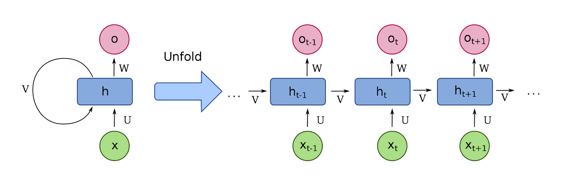
Fig. tomada de link.
Hay datos que son meramente secuenciales, como el texto, audio, vídeo, etc., es decir, datos que fuera de un determinado orden no tienen ningún sentido. Ya que las redes nueronales comunes como un MLP no guardan información sobre la secuencia, son ineficientes para trabajar con ellas.
Por lo tanto, se propuso el bloque recurrente, cuyo esquema se muestra en la fig. de arriba. La idea básica (tomando como punto de partida el NLP) es que las oraciones pueden ser procesadas en la red neuronal profunda, palabra por palabra, de tal manera que se inyecta una representación de la palabra anterior en las capas ocultas de la palabra actual. Esto permite que las RNN incorporen explícitamente la naturaleza temporal de los datos en el modelo.
Aunque la idea motivadora detrás de las RNN fue bastante profunda, su formulación matemática era tal que no podían modelar secuencias largas. Las RNN modelan secuencias como interacciones multiplicativas entre representaciones ocultas de palabras. Por lo tanto, tratar de modelar secuencias largas llevó a gradientes que explotaban y desaparecían. Se requirió una modificación en el diseño de las RNN para estabilizar el entrenamiento.
Fig. tomada de link.
Las compuertas de una LSTM regulan su memoria recurrente. La atención selecciona o pondera representaciones mediante una consulta. Pueden combinarse, pero son mecanismos distintos y no una reproducción literal de la atención humana.
Referencia: Hochreiter y Schmidhuber · LSTM
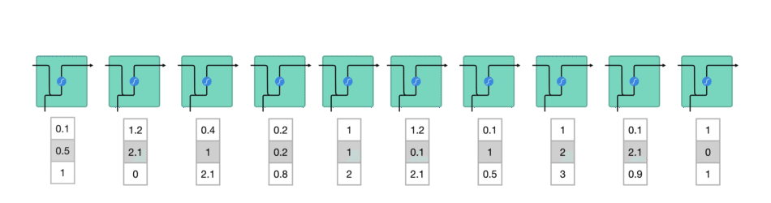
Fig. tomada de link.
Durante el procesamiento, se pasa el estado oculto anterior al siguiente paso de la secuencia. El estado oculto actúa como memoria de la red neuronal. Contiene información sobre datos anteriores que la red ha visto antes.
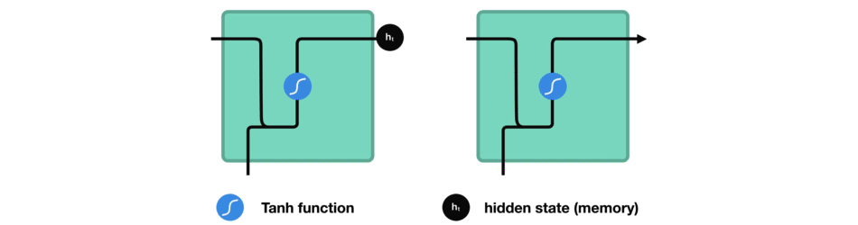
Fig. tomada de link.
Ahora, veremos como se calcula el estado oculto en una RNN. Primero, la entrada y el estado oculto previo se combinan para formar un vector. Ese vector ahora tiene información sobre la entrada actual y las entradas anteriores. El vector pasa a través de la activación tangente hiperbólica (tanh), y la salida es el nuevo estado oculto, o la memoria de la red.
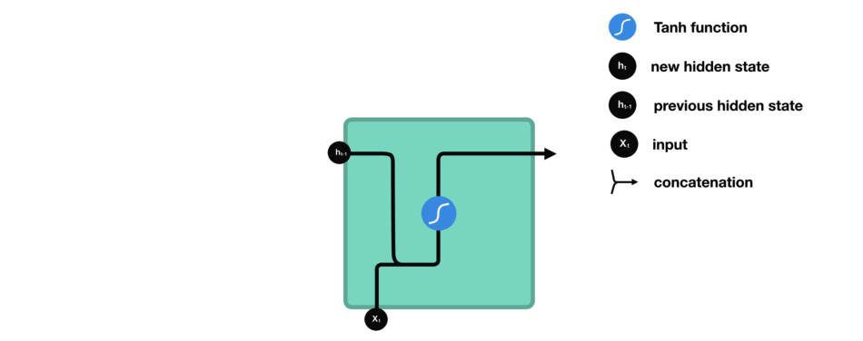
Fig. tomada de link.
La activación tangente hiperbólica (tanh) se utiliza para ayudar a regular los valores que fluyen a través de la red. La función tangente hiperbólica comprime los valores para que siempre estén entre -1 y 1.
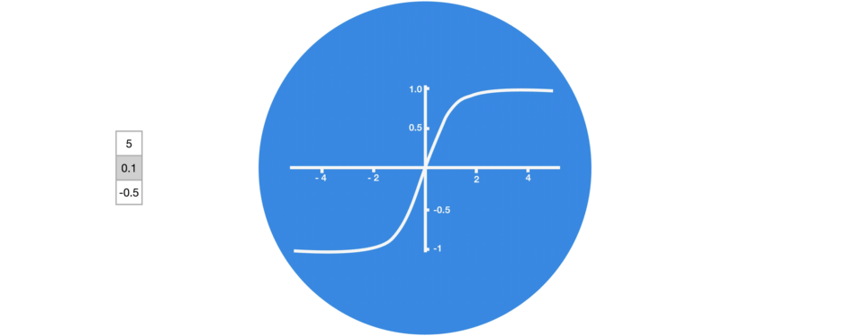
Fig. tomada de link.
Si no se utilizara la función , cuando los vectores fluyen a través de una red neuronal, se someten a muchas transformaciones debido a diversas operaciones matemáticas. Entonces, un valor que continuaría multiplicándose, digamos, por 3. Estos valores pueden "explotar" y volverse astronómicos, lo que hace que otros valores parezcan insignificantes.
Fig. tomada de link.
Una función tangente hiperbólica **asegura que los valores se mantengan entre -1 y 1, regulando así la salida de la red neuronal. **Puedes ver cómo los mismos valores de arriba permanecen entre los límites permitidos por la función tangente hiperbólica.
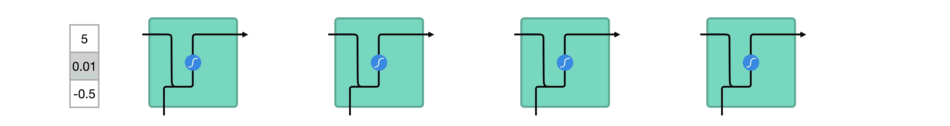
1.2. Memoria a Corto y a Largo Plazo (Long Short Term Memoria - LSTM)
Una red LSTM tiene un flujo de control similar al de una red neuronal recurrente. Procesa los datos pasando información a medida que se propaga hacia adelante. Las diferencias están en las operaciones dentro de las celdas del LSTM.
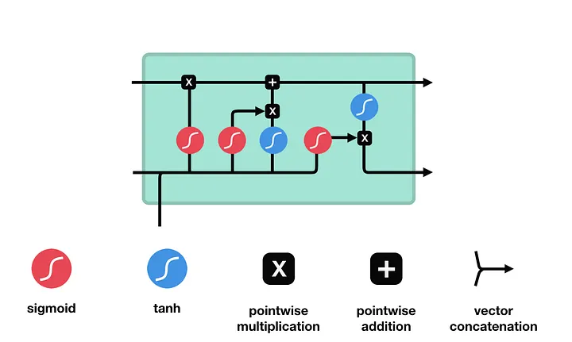
Fig. tomada de link.
Estas operaciones son usadas para permitir a la red LSTM guardar u olvidar la información relevante.
1.2.1. Concepto Principal
La red LSTM se basa en el estado de la celda y sus compuertas.
El estado de la celda actúa como un puente en donde se transfiere información a lo largo de toda la cadena de secuencia. Es decir, sería la "memoria" de la red. Por lo tanto, incluso la información de los pasos de tiempo anteriores puede llegar a los pasos de tiempo posteriores, reduciendo los efectos de la memoria a corto plazo.
A medida que el estado de la celda avanza en su viaje, se agrega o elimina información del estado de la celda a través de compuertas. Las compuertas son diferentes redes neuronales que deciden qué información se permite en el estado de la celda. Las compuertas pueden aprender qué información es relevante para mantener o olvidar durante el entrenamiento.
1.2.2. Función Sigmoid
Las compuertas contienen activaciones sigmoides. Una activación sigmoide es similar a la activación tangente hiperbólica (tanh). En lugar de comprimir los valores entre -1 y 1, comprime los valores entre 0 y 1. Eso es útil para actualizar o olvidar datos porque cualquier número multiplicado por 0 es 0, lo que hace que los valores desaparezcan o sean "olvidados". Cualquier número multiplicado por 1 es el mismo valor, por lo tanto, ese valor se mantiene igual o se "guarda". La red puede aprender qué datos no son importantes y, por lo tanto, pueden ser olvidados o qué datos son importantes para mantener.
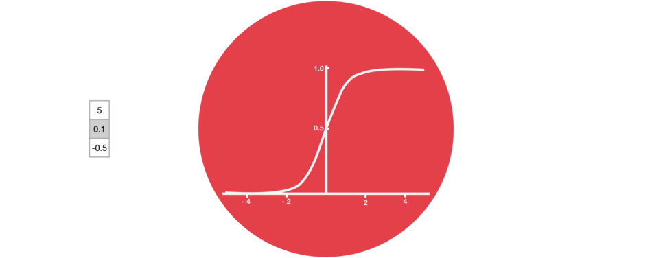
1.2.3. Compuerta de Olvido (Forget Gate)
Esta compuerta decide qué información debe ser descartada o mantenida. La información del estado oculto anterior y la información de la entrada actual se pasan a través de la función sigmoide. Los valores salen entre 0 y 1. Cuanto más cercano a 0, significa que se debe olvidar, y cuanto más cercano a 1, significa que se debe mantener.
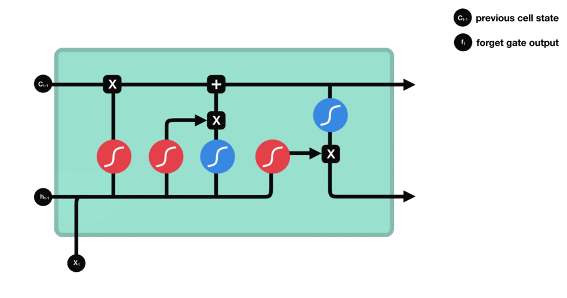
1.2.4. Compuerta de Entrada (Input Gate)
Para actualizar el estado de la celda, tenemos la compuerta de entrada. Primero, pasamos el estado oculto anterior y la entrada actual a través de una función sigmoide. Eso decide qué valores se actualizarán transformando los valores para que estén entre 0 y 1. 0 significa no importante y 1 significa importante. También se pasa el estado oculto y la entrada actual a través de la función tangente hiperbólica (tanh) para comprimir los valores entre -1 y 1 y ayudar a regular la red. Luego, multiplicamos la salida de tanh con la salida de la sigmoide. La salida de la sigmoide decidirá qué información es importante mantener de la salida de tanh.
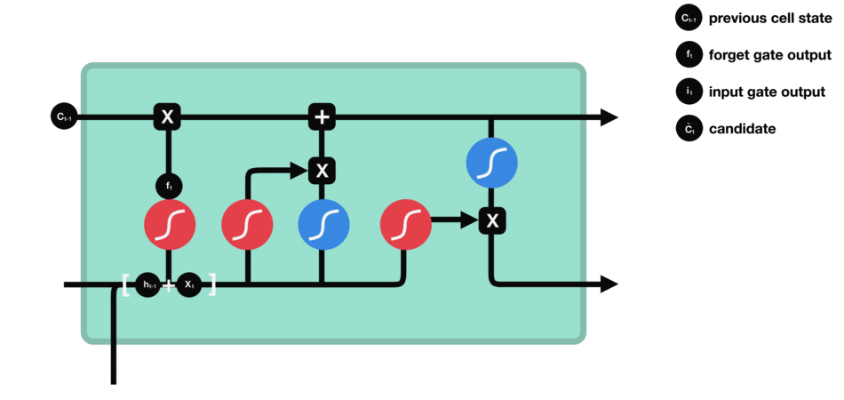
1.2.5. Estado de la Celda (Cell State)
Primero, el estado de la celda se multiplica elemento a elemento por el vector de olvido. Esto tiene la posibilidad de eliminar valores en el estado de la celda si se multiplica por valores cercanos a 0. Luego, tomamos la salida de la compuerta de entrada y hacemos una suma punto a punto que actualiza el estado de la celda a nuevos valores que la red neuronal considera relevantes. Eso nos da nuestro nuevo estado de celda.
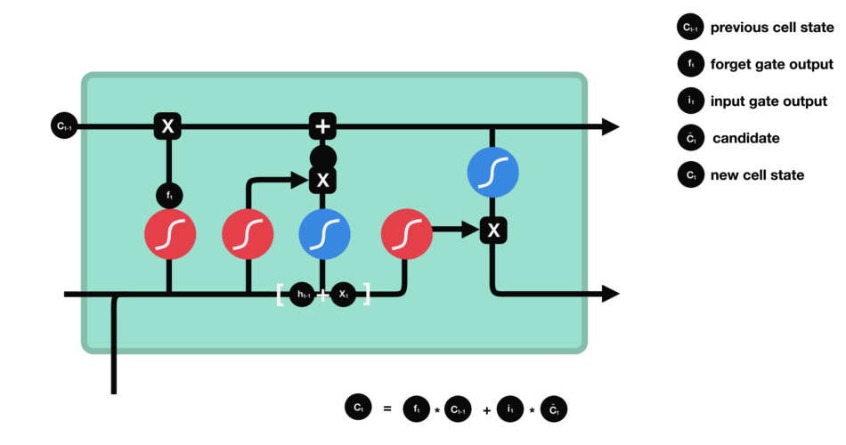
1.2.6. Compuerta de Salida (Output Gate)
La compuerta de salida decide cuál debería ser el siguiente estado oculto. Recuerda que el estado oculto contiene información sobre las entradas anteriores. El estado oculto también se utiliza para hacer predicciones. Primero, pasamos el estado oculto anterior y la entrada actual a una función sigmoide. Luego, pasamos el estado de celda recién modificado a la función tangente hiperbólica. Multiplicamos la salida de tangente hiperbólica con la salida de sigmoide para decidir qué información debe llevar el estado oculto. La salida es el estado oculto. El nuevo estado de celda y el nuevo estado oculto se llevan al siguiente paso de tiempo.
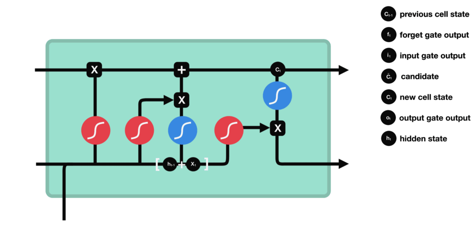
1.3. Atención Global
La atención global significa que la red neuronal considera toda la entrada al mismo tiempo para realizar su tarea. Es como si la red neuronal viera la imagen completa y tratara de comprenderla en su conjunto.
Teniendo en cuenta los sistemas de Traducción Automática del NLP, la arquitectura más simple tiene la siguiente estructura de codificador y decodificador.
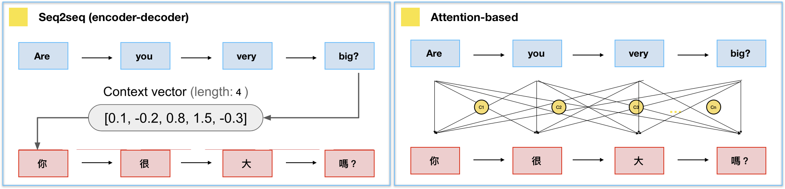
Fig. tomada de link.
El codificador lee una secuencia de palabras y la representa con un vector de alta dimensión y valores reales. Este vector, a menudo llamado vector de contexto, se le da al decodificador, que luego genera otra secuencia de palabras en el idioma de destino. Si la secuencia de entrada es muy larga, un solo vector del codificador no proporciona suficiente información para el decodificador.
La atención consiste en dar más información contextual al decodificador. En cada paso de decodificación, se informa al decodificador cuánta "atención" debe prestar a cada palabra de entrada. Mientras que la atención comenzó de esta manera en la modelización de secuencia a secuencia, luego se aplicó a las palabras dentro de la misma secuencia, dando lugar a la autoatención y la arquitectura transformer.
Desde finales de la década de 2010, el mecanismo de atención se ha vuelto popular, a veces reemplazando a las CNN, RNN y LSTM.
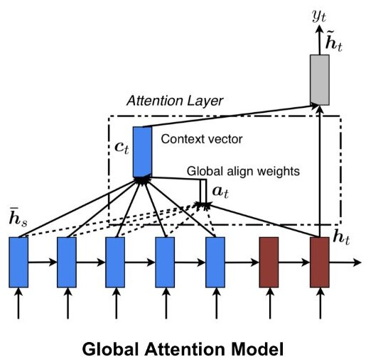
En Bahdanau la alineación usa el estado previo del decoder y los estados del encoder. En la formulación global de Luong se usan el estado actual del decoder y los estados del encoder. Se consultan estados de diferentes posiciones, no solo el primero y el último.
Referencia: Luong et al. · Atención global y local
1.4. Atención Local
ado que la atención global tiene que prestar atención a todas las palabras en el lado de la fuente para cada palabra objetivo, representa una tarea costosa para la traducción de documentos largos (párrafos, textos, etc.).
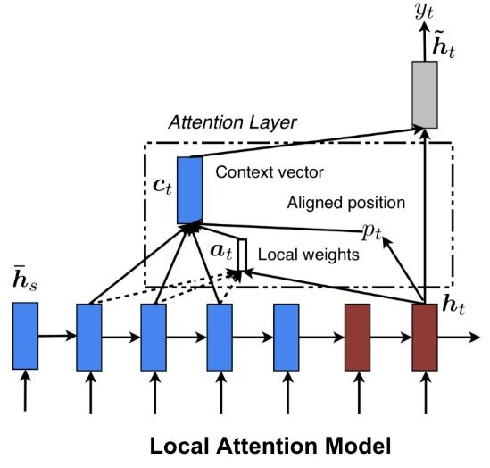
La atención local de Luong et al. (2015) restringe la combinación a una ventana alrededor de una posición central. Puede usar una predicción diferenciable del centro; no se atribuye este esquema local a Bahdanau.
Referencia: Luong et al. · Atención global y local
1.5. Atención Suave y Fuerte (Soft y Hard)
Soft attention combina valores con pesos continuos. Hard attention elige posiciones discretas. Local attention limita la región atendida y puede seguir siendo suave dentro de ella: local y hard no son sinónimos.
Referencia: Luong et al. · Atención global y local
Bibliografía del tema
- Vaswani et al. · Attention Is All You Need
- Bahdanau et al. · Alineación aprendida
- Luong et al. · Atención global y local
- Xu et al. · Show, Attend and Tell
- PyTorch · Gumbel-softmax
- Hochreiter y Schmidhuber · LSTM
- Parikh et al. · Decomposable attention
- Cheng et al. · LSTMN
- Graves et al. · Neural Turing Machines